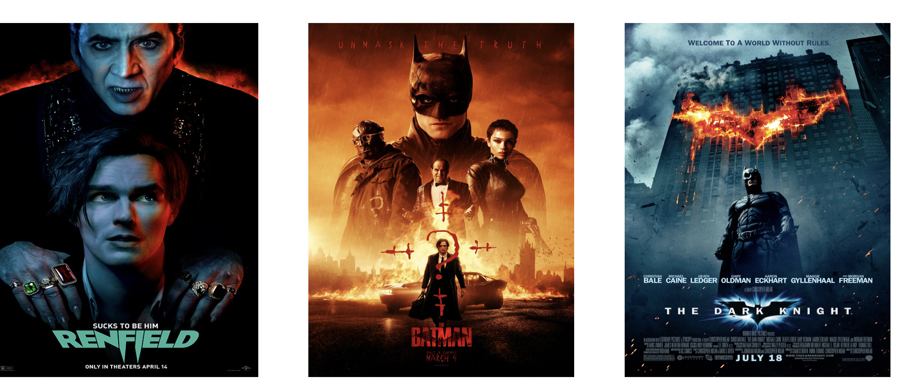

Movie Personality Test
Introducing a fully functional and engaging web application that I have just developed!
This unique platform explores the fascinating correlation between our personalities and the cultural content we consume. Rather than simply asking mundane questions about movie preferences, this application delves deep into the intricacies of individual traits to provide personalized movie recommendations. Utilizing the powerful IMDB API, the application seamlessly integrates with the vast movie database to offer an enriching user experience.
With a captivating and creative personality test, users embark on a captivating journey of self-discovery. The test ingeniously assesses various aspects of their personalities through an innovative approach, enabling the application to gain profound insights into their tastes and preferences. Through a series of thought-provoking questions, the web application unveils the true essence of each user, unraveling their unique quirks and inclinations.
Once the personality test is completed, the web application harnesses the power of React, a robust and dynamic framework, to generate highly tailored movie recommendations. Analyzing the user's distinctive traits and preferences, the application cleverly matches them with a handpicked selection of five movies from the extensive IMDB database.
Embark on a journey of self-discovery and cinematic exploration with this remarkable web application. Discover the movies that truly resonate with your unique personality and delve into a world of captivating storytelling. Let your cultural consumption reflect the person you truly are!
Website Link: Movie Personality Test.
Technologies Used: React.js, IMDB API